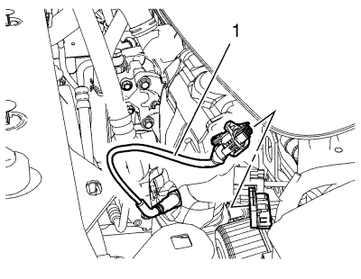
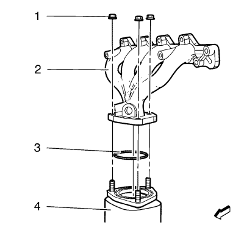
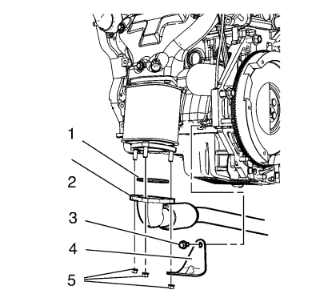
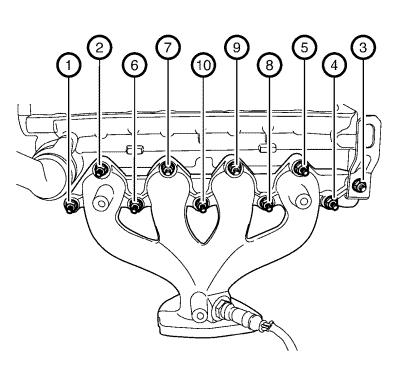
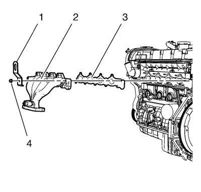
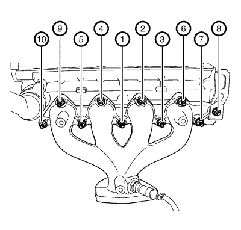

Sustitución del colector de escape 1.6L LXT
Procedimiento de desmontaje
Advertencia: Consulte Advertencia sobre sistema de escape caliente en la sección Prólogo.
Advertencia: Consulte Advertencia sobre guantes y gafas protectoras en la sección Prólogo.
- Abra el capó.
- Desmontar la pantalla de protección del motor. Consultar Sustitución del protector del motor .

- Desconecte el enchufe del mazo de cables de la sonda Lambda calentada 1.
- Desmonte la pantalla térmica del colector de escape. Consultar
Sustitución de la pantalla térmica del colector de escape : 1.6L LDE, LXV y 1.8L 2H0 → 2.0L Diésel LLW .

- Desmonte las 3 tuercas del catalizador (1).
- Suba el vehículo a la altura máxima. Consultar Elevación y soporte en alto del vehículo .
- Desmonte el tubo flexible de escape. Consultar
Sustitución del tubo flexible de escape : 1.6L LXT → 1.6L LDE, LXV y 1.8L 2H0 → 2.0L Diésel LLW .

- Desmonte las 3 tuercas inferiores del catalizador (5).
- Retire el tornillo del soporte del catalizador (3).
- Retire el soporte (4) del catalizador.
- Desmonte el catalizador (4).
- Desmonte la junta superior del catalizador.
- Baje el vehículo a la altura máxima.

- Afloje las 10 tuercas del colector de escape en el orden indicado en el gráfico.

- Extraiga la tuerca del soporte de elevación del motor (4).
- Extraiga el soporte de elevación del motor (1).
- Retire el colector de escape (2).
- Retire las 9 tuercas del colector de escape.
- Retire la junta (3) del colector de escape.
Procedimiento de montaje
Nota: Asegúrese de que la superficie del colector de escape y la superficie de la culata no tienen material de sellado viejo.
- Monte una junta NUEVA para el colector de escape (3).
- Monte el colector de escape (2).
- Monte el soporte de elevación del motor (1).
Precaución:Consulte Precaución con las fijaciones en la sección Prólogo.
- Monte una tuerca nueva en el soporte de elevación del motor (4) y apriétela a 25 N·m (18 lib. pie)en el orden indicado en el siguiente gráfico.

- Monte 9 tuercas del colector de escape nuevas en el orden indicado en el gráfico y apriételas a 22 N·m (17 lib. pie)..
- Levante el vehículo a la altura máxima.
- Monte una junta superior de catalizador nueva.
- Monte el catalizador (4).
- Monte el soporte (4) del catalizador.
- Monte las 3 tuercas inferiores del convertidor catalítico (5) y apriételas a 50 N·m (37 lib. pie).
- Monte el tornillo del soporte del catalizador (3) y apriételo a 50 N·m (37 lib. pie).
- Monte el tubo flexible de escape. Consultar
Sustitución del tubo flexible de escape : 1.6L LXT → 1.6L LDE, LXV y 1.8L 2H0 → 2.0L Diésel LLW .
- Baje el vehículo a la altura máxima.
- Monte 3 tuercas de catalizador nuevas (1) y apriételas a 40 N·m (30 lib. pie).
- Monte la pantalla térmica del colector de escape. Consultar
Sustitución de la pantalla térmica del colector de escape : 1.6L LDE, LXV y 1.8L 2H0 → 2.0L Diésel LLW .
- Conecte el enchufe del mazo de cables de la sonda Lambda calentada (1).
- Monte el protector del motor. Consultar Sustitución del protector del motor .
- Cierre el capó.
| © Copyright Chevrolet. Reservados todos los derechos |